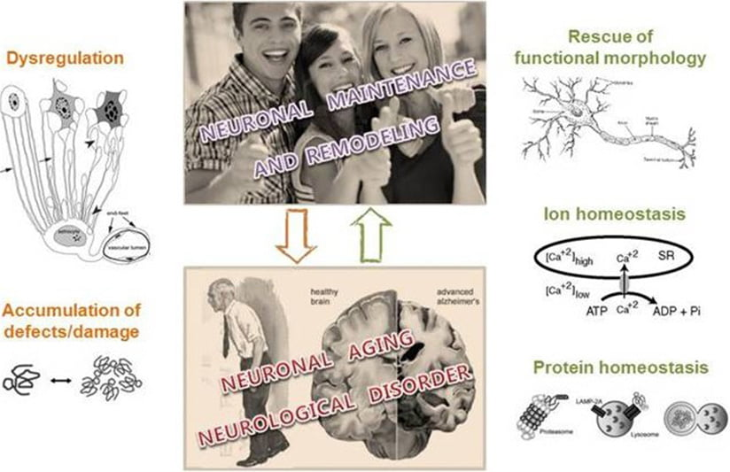

Research

The primary goal of our research is to reveal the cellular and molecular basis of neurodegenerative diseases.
For this, we use disease model systems such as fruit flies (Drosophila melanogaster) and mammalian cell culture. In collaboration, these neuronal changes are further analyzed by systems biology.
Many neurodegenerative diseases are associated with clear and specific neuronal abnormalities during early stages that precede massive neuronal cell death. However, the molecular details and clinical implications of these abnormalities remain limited because many studies focus primarily on late-stage neuronal death.
Our ongoing approach based on this unique angle will provide invaluable clues to understanding these diseases and contribute to future effective treatments.
We are also interested in the molecular details of neuronal maintenance and remodeling during animal aging, and their implications in late-onset neurodegenerative disease.
Our four major questions are:
What is the “cellular basis” of neurodegenerative diseases?
How can we ameliorate the toxicity of aggregated proteins associated with neurodegenerative diseases?
What is the relationship between neural cellular aging and late-onset neurodegenerative diseases?
What is the physiological consequence of altered cellular ion & mRNA homeostasis?